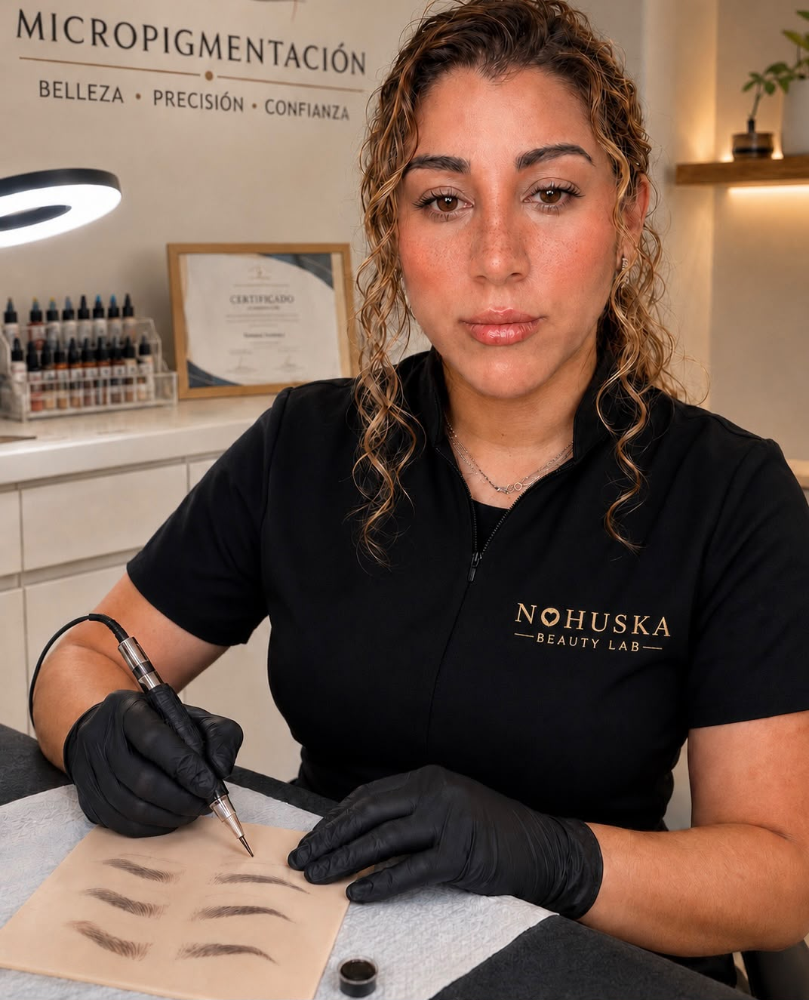

Guía capilar · decisión informada
Micropigmentación capilar para mujer: densidad, raya y entradas
La técnica puede ayudar a reducir visualmente el contraste del cuero cabelludo cuando existe cabello, pero la raya, las entradas y la piel deben valorarse antes de recomendarla.

Cuándo puede tener sentido valorar el efecto densidad.
La consulta suele aparecer cuando el cuero cabelludo se percibe más visible entre el cabello existente. El pigmento se distribuye para acompañar el patrón real, no para dibujar una masa uniforme ni ocultar cualquier caso sin diagnóstico previo.
La estabilidad de la zona importa. Si la pérdida es reciente, rápida, difusa o se acompaña de irritación, dolor o una alteración activa, puede ser necesario consultar primero con un profesional sanitario.
Zonas que revisamos en la valoración
Antes de decidir
No todos los casos necesitan la misma solución.
La micropigmentación capilar es estética. No sustituye una evaluación médica ni un tratamiento capilar y tampoco detiene la caída. Por eso preguntamos por la evolución de la zona, procedimientos previos, medicación comunicada y expectativas.
También estudiamos el color del cabello, el tono de la piel y cómo cambia la zona con diferentes peinados y luces. El objetivo debe seguir pareciendo coherente de cerca y durante la evolución del pigmento.
Para una primera orientación
- Fotografía superior con luz natural.
- Vista frontal y lateral de las entradas.
- Imagen sin fibras, filtros ni retoques.
- Explicación de cuándo empezó el cambio.
Procedimiento propio
Diseño y precisión antes de pigmentar.
Este vídeo muestra parte de un procedimiento real realizado en Nohuska. Enseña la precisión del trabajo, pero no promete un resultado idéntico: cada piel, patrón y zona requieren una planificación distinta.
Preguntas sobre micropigmentación capilar femenina
¿Sirve si tengo poca densidad?
Puede reducir visualmente el contraste en zonas seleccionadas cuando existe cabello. La viabilidad depende del patrón, la piel y el objetivo.
¿Puede hacerse con el pelo largo?
Puede valorarse un efecto densidad entre el cabello existente. No es necesario buscar un efecto rapado si ese no es el objetivo del caso.
¿Sirve para cualquier alopecia?
No. Si la caída es activa, reciente o no está valorada, puede ser necesario consultar primero con un profesional sanitario.
¿Cuántas sesiones y qué precio tiene?
Dependen de la superficie, el patrón y el plan de trabajo. La valoración gratuita permite explicar la propuesta antes de reservar.
¿Dónde se realiza?
En Nohuska Beauty Lab, Avinguda Sant Esteve, 40, 08402 Granollers, con cita previa.
Empieza por saber si encaja contigo.
Valoración gratuita, límites claros y propuesta personalizada en Granollers.
Solicitar valoración